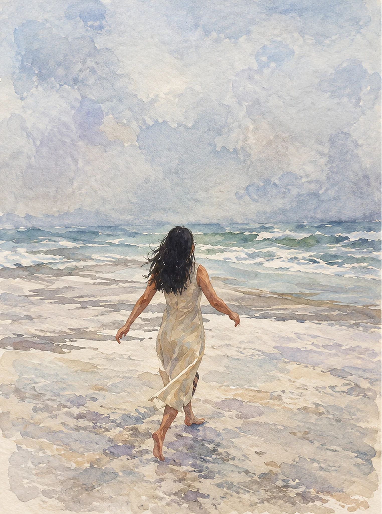
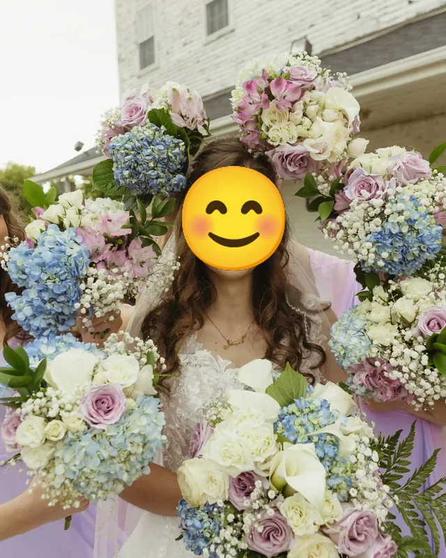
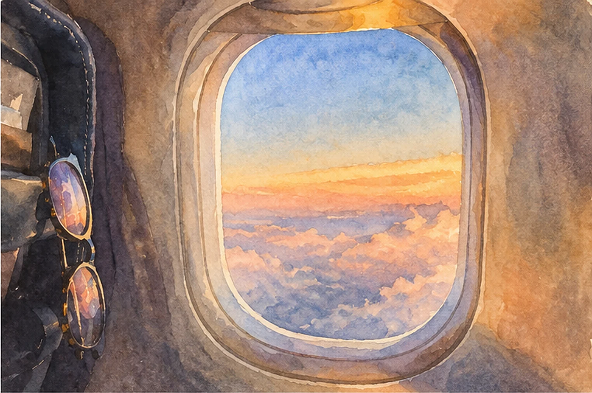
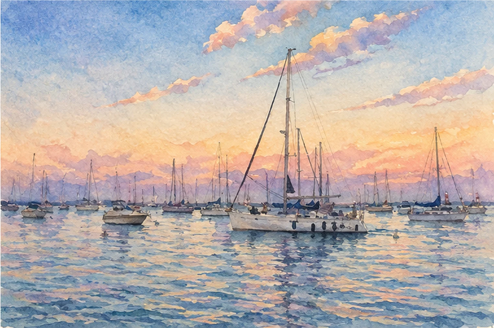
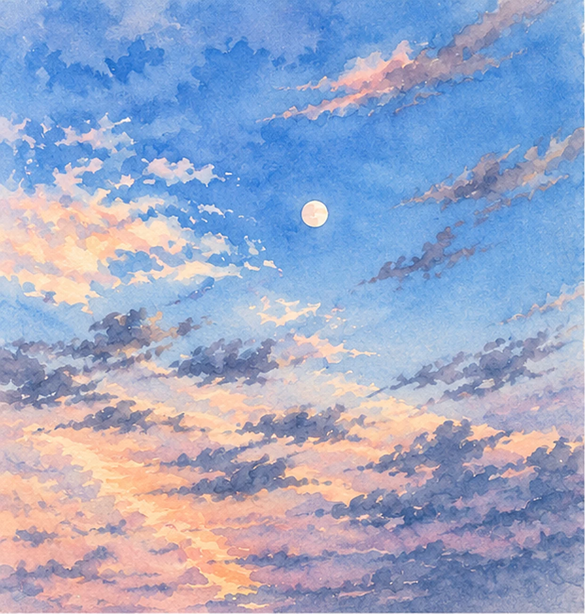
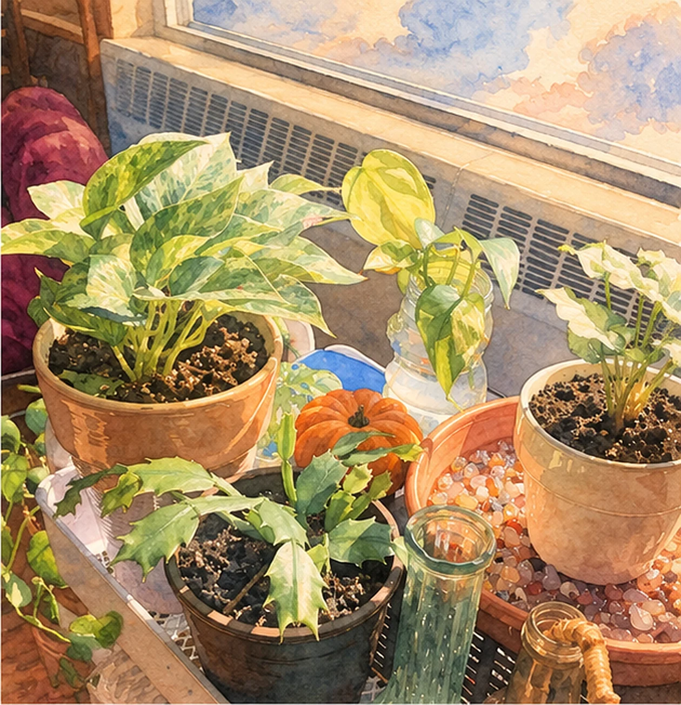
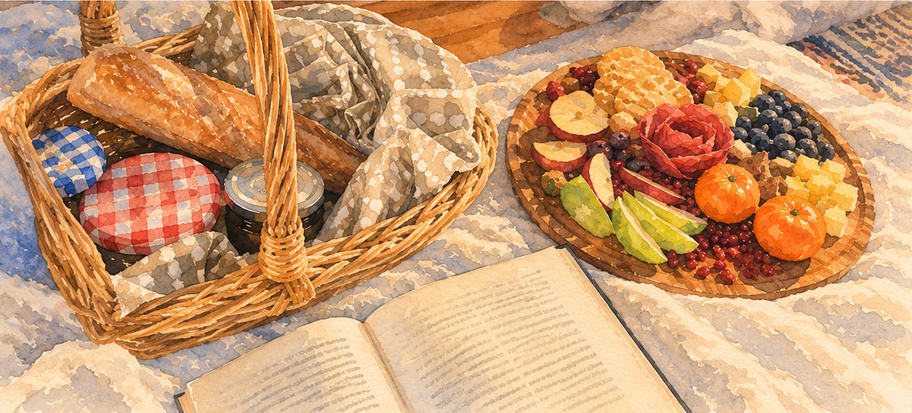

About me
The distance between people
Whether it's a farmer's hands and a stranger's table, an alum's investment and a student's dream, or a daughter's words and her family's future, I care about closing the distance between people.


Hi, I'm Tina Wu Chao. I'm a senior at the University of Michigan School of Information studying UX, with minors in Entrepreneurship and Music. This past summer I interned at in2being, a medical device design and regulatory consultancy, where I researched how clients understand complex work.
I'm also a musician and a photographer. That part isn't separate from the design work. It's how I learned to listen.
- School
- University of Michigan, School of Information
- Degree
- B.S. Information, UX track
- Minors
- Entrepreneurship · Music
- Graduating
- May 2027
- Most recently
- UX research intern, in2being (summer 2026)
- Based in
- Ann Arbor, Michigan

off the clock
People are my favorite part
I'm an ENFP, and I'm really social. I love connecting with people and making them feel loved, cared for and seen.
Most of what I do is spend time with people, learning more about myself and others along the way. It's almost like I'm a user researcher in my everyday life with my family, my friends and the people around me. I'll ask how something you mentioned last time is going, and I love thinking up creative, playful ideas and actually making them happen. I even did the flowers for my friend's wedding.
I'm also interested in other cultures and languages. Right now I'm working on my Chinese, and I hope to travel to China soon to get more in touch with my parents' culture.

The story behind my logo
My logo started as a stamp. When I was little, my parents had it made for me while our family was in China. My older brother got one too, except his said “Bernard is awesome.” Being seven years younger, I wasn't quite old enough to make those kinds of executive decisions.
Mine had my English name, Tina, on top and my Chinese name underneath.
My brother's and my Chinese names come from the same four-character expression, 宁静致远 (níng jìng zhì yuǎn), which speaks to finding the clarity and stillness to pursue far-reaching goals. His name contains 宁, and mine contains 静.
Years later, that childhood stamp became my logo. It's a little piece of my family and my history that I get to carry into the work I do today.

gift tags
Every gift starts with listening
I love giving people thoughtful gifts. Each one starts the way my research does: paying attention to what someone loves.
Songs that started with listening
-
a song for a friend
I wrote a song for my friend based on her sense of identity.
-
afrobeats + pidgin
I interviewed a Nigerian friend to write a song using Afrobeats and Pidgin.
My process
See it on the highway- Mile 1
Sit with the problem
Read, ask, and resist the rush to a solution.
- Mile 2
Listen to real people
Research from real voices, down to the details people mention in passing.
- Mile 3
Find the insight
The one idea that keeps coming back, interview after interview, until I can say it in a sentence.
- Mile 4
Admit what I got wrong
Say where my first read was off and what changed my mind.
- Mile 5
Make it work for them
Not what's impressive. Whether it works for the person it was made for.
Top five strengths
From the CliftonStrengths assessment, with what each looks like in my work
- Belief
- Grounded in why it matters, not just whether it ships.
- Ideation
- Generates options before committing to one.
- Empathy
- Stays in research until the real problem surfaces.
- Connectedness
- Sees the line between a farmer, a founder and a student.
- Individualization
- Treats users as people with names and pains.
Music
I write and record my own songs. Pull a record out of its sleeve and put it on.
hover a sleeve, click to playtap a sleeve to play
-
Kindle ColdOriginal single
-
Set ApartNew recording
-
EvergreenOriginal, in translation
what I play
- Voice
- Piano
- Guitar
- Guzheng
- Cajón
- Ocarina
- Drum kit
Watch me perform: video 1 · video 2 · video 3 · Kindle Cold on Spotify · everything on Linktree
The story behind Evergreen is just below.


Storytelling
Storytelling is life. Let me pull you into a moment in time. May you live the seconds I hope to tell, so I can reach you not only through words, but touch your soul.
Outside of design, I write and record music. This one means the most to me:
Evergreen
I hate when there are no other words to call it but something that will hurt. But that's what it was. It was her deathbed.
She didn't have long to live. So he asked her to write, and put her words to a melody. From the ancient characters from the eastern deeps to melodic American letters and beats.
With all my blood, but none of my life, as another Han Chinese who lived in this time, I wanted to give you back your words in your mother tongue. So I wound it back, asked for help and a hand, and reversed the translation so I could sing your words for your heart and peace.
I hope it brought, at least a semblance of these.
Through my lens
Photos I've taken, turned into watercolors with ChatGPT.





Let's merge
Email me at tiwuchao@umich.edu, find me on LinkedIn, or read my résumé.